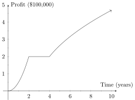
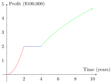
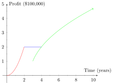

This section discusses the analytic view of piecewise functions.
Recall that the idea of piecewise functions is to stitch together several different functions, each one of which applies to a specific segment of the overall relation. Consider the graph from the previous section that depicted profit over time for a new company:

We can clearly break this graph into three pieces as so;

Our goal is to write a (piecewise) function, , that is really a combination of each of these three functions. However, first we need to record the three functions themselves. In our case we have the following:
We could simply use this descriptive method to define our piecewise function, but as usual we utilize a more compact form of notation. Consider the following piecewise function notation:
This notation is deceptively dense and it is worth breaking down each part of it.
Something to keep in mind in the above function, is that the domains (the intervals of for each function) are disjoint, meaning that there should be no overlap between the intervals. In particular, we have and , rather than and which has in both intervals. In general, the chances of having a well defined function with overlapping intervals is almost nil. Having overlapping intervals in the function segments is how a piecewise relation fails the vertical line test. Consider from the geometric view tile the following piecewise relation graph:

This graph is generated by the following piecewise relation:
Notice that the intervals above overlap because the second function is defined on and the third is defined on , which is why the piecewise relation fails the vertical line test on the interval ; ie on the overlap.